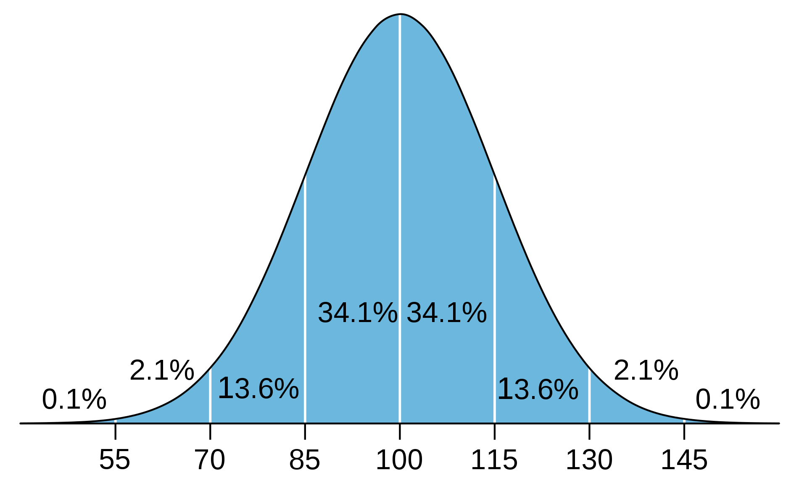

Myers Briggs Type Indicator Test
Personality: Turbulent Advocate (INFJ-T)
My Role: Diplomat
My Strategy: Constant Improvement
Online Learning Style Test
Results: Visual Learner
IQ Test
Results: 138
What these results mean to me
As I have never done any self-assessments this before it was quite insightful and refreshing to see myself from the different perspectives reflected by each test, and to understand my alignment on a global scale, such as where my IQ stands on a human average, how my personality is reflected in modern society, and the community of others with similar personality types.
How I think these results will influence my behavior in a team
From the results gathered, I believe I can bring some valuable qualities to a team. My attitude or actions will not drastically change from a result of knowing these results, but I have gained an awareness as to where my strengths lie. I will try to emphasise those qualities to be of a benefit to the team and project as much as possible, such as being able to use my diplomatic strengths to assist the group in harmonizing individual ideas and creating a cooperative, supportive, and productive environment for each person to flourish, or using my strong problem-solving abilities to assist in overcoming any difficulties.
How I will take this into account when forming a team
These results I consider more of a guide than a rulebook to affect my decisions in forming a team. They provide an insight of what qualities I may possess, and an opportunity to openly discuss these qualities with others before a team is formed. It is beneficial to be able to openly discuss our learning styles, personality types and other test results before forming a team as having diversity creates more opportunity for creativity.